import requests
from folium import Map, TileLayerVisualizing Ocean NPP time series for seasonal patterns
Explores Ocean NPP patterns over time in Walvis Bay, Namibia using the Raster API.
Run this notebook
You can launch this notebook using mybinder, by clicking the button below.

Approach
- Identify available dates and temporal frequency of observations for a given collection
- Pass STAC item into raster API
/stac/tilejson.jsonendpoint - Get time series statistics over available time period to identify seasonal trends
- Visualize peak by displaying the tile in
folium - Visualize time series of raster images
About the Data
Ocean Net Primary Production (NPP) is the result of CO2 fixation, through photosynthesis, by marine phytoplankton which contain chlorophyll. It is the proportion of phytoplankton-sequestered carbon that enters the oceanic food web and supports a variety of marine life.
The Case Study - Walvis Bay, Namibia
Walvis Bay is home to Namibia’s largest marine farming center and a well established commercial fishing industry. It’s location in the nutrient-rich Benguela upwelling system of the Atlantic Ocean, means producers can rely on this area to cultivate an abundance of shellfish including oysters, mussels, and scallops.
Occasionally the nutrient-rich waters of the Atlantic produce higher than normal NPP levels, resulting in short-lived harmful algal blooms. This is often a result of both favorable temperatures and abundance of sufficient nutrients. The resulting algal blooms can have severe consequences causing massive fish kills, contaminating seafood with toxins and creating an unsafe environment for humans and marine life. Toxins accumulated in the shellfish organs can be subsequently transmitted to humans through consumption and resulting in serious health threats.
In this example we explore the Ocean NPP dataset over the year 2020 to identify spatial and temporal patterns of Ocean NPP in the Walvis Bay area.
Querying the STAC API
# Provife STAC and RASTER API endpoints
STAC_API_URL = "https://openveda.cloud/api/stac"
RASTER_API_URL = "https://openveda.cloud/api/raster"
# Declare collection of interest - Ocean NPP
collection_name = "MO_NPP_npp_vgpm"# Fetch STAC collection
collection = requests.get(f"{STAC_API_URL}/collections/{collection_name}").json()
collection{'id': 'MO_NPP_npp_vgpm',
'type': 'Collection',
'links': [{'rel': 'items',
'type': 'application/geo+json',
'href': 'https://openveda.cloud/api/stac/collections/MO_NPP_npp_vgpm/items'},
{'rel': 'parent',
'type': 'application/json',
'href': 'https://openveda.cloud/api/stac/'},
{'rel': 'root',
'type': 'application/json',
'href': 'https://openveda.cloud/api/stac/'},
{'rel': 'self',
'type': 'application/json',
'href': 'https://openveda.cloud/api/stac/collections/MO_NPP_npp_vgpm'}],
'title': '',
'assets': {'thumbnail': {'href': 'https://thumbnails.openveda.cloud/ocean-production--dataset-cover.jpg',
'type': 'image/jpeg',
'roles': ['thumbnail'],
'title': 'Thumbnail',
'description': 'Photo by [Karl Callwood](https://unsplash.com/photos/Ko1sGLhZm5w) (Rocky ocean shore)'}},
'extent': {'spatial': {'bbox': [[-180.0000050868518,
-90.00000508655744,
180.0000050868518,
89.9999974571629]]},
'temporal': {'interval': [['2020-01-01T00:00:00+00:00',
'2020-12-31T00:00:00+00:00']]}},
'license': 'MIT',
'renders': {'dashboard': {'title': 'VEDA Dashboard Render Parameters',
'assets': ['cog_default'],
'rescale': [[0, 1500]],
'colormap_name': 'jet'}},
'providers': [{'url': 'https://www.earthdata.nasa.gov/dashboard/',
'name': 'NASA VEDA',
'roles': ['host']}],
'summaries': {'datetime': ['2020-01-01T00:00:00Z', '2020-12-31T00:00:00Z']},
'description': 'Ocean Net Primary Production (NPP): https://oceancolor.gsfc.nasa.gov/atbd/npp/',
'item_assets': {'cog_default': {'type': 'image/tiff; application=geotiff; profile=cloud-optimized',
'roles': ['data', 'layer'],
'title': 'Default COG Layer',
'description': 'Cloud optimized default layer to display on map'}},
'stac_version': '1.0.0',
'stac_extensions': ['https://stac-extensions.github.io/render/v1.0.0/schema.json',
'https://stac-extensions.github.io/item-assets/v1.0.0/schema.json'],
'dashboard:is_periodic': True,
'dashboard:time_density': 'month'}# Verify frequency of data available
collection["dashboard:time_density"]'month'# Get collection summary
collection["summaries"]{'datetime': ['2020-01-01T00:00:00Z', '2020-12-31T00:00:00Z']}Great, we can explore the year 2020 time series. Let’s create a bounding box to explore the Walvis Bay area of interest (AOI) in Namibia
# Walvis Bay, Namibia
walvis_bay_aoi = {
"type": "Feature",
"properties": {},
"geometry": {
"coordinates": [
[
[13.686159004559698, -21.700046934333145],
[13.686159004559698, -23.241974326585833],
[14.753560168039911, -23.241974326585833],
[14.753560168039911, -21.700046934333145],
[13.686159004559698, -21.700046934333145],
]
],
"type": "Polygon",
},
}Let’s visualize the AOI we have just created using folium
# We'll plug in the coordinates for a location
# central to the study area and a reasonable zoom level
import folium
m = Map(
tiles="OpenStreetMap",
location=[
-22.421460,
14.268801,
],
zoom_start=8,
)
folium.GeoJson(walvis_bay_aoi, name="Walvis Bay").add_to(m)
mMake this Notebook Trusted to load map: File -> Trust Notebook
Returning back to our STAC API requests, let’s check how many total items are available.
# Check total number of items available
items = requests.get(
f"{STAC_API_URL}/collections/{collection_name}/items?limit=100"
).json()["features"]
print(f"Found {len(items)} items")Found 12 itemsThis makes sense is our collection is monthly, so we should have 12 total items.
# Explore one item to see what it contains
items[0]{'id': 'A_202012.L3m_MO_NPP_npp_vgpm_4km',
'bbox': [-180.0000050868518,
-90.00000508655744,
180.0000050868518,
89.9999974571629],
'type': 'Feature',
'links': [{'rel': 'collection',
'type': 'application/json',
'href': 'https://openveda.cloud/api/stac/collections/MO_NPP_npp_vgpm'},
{'rel': 'parent',
'type': 'application/json',
'href': 'https://openveda.cloud/api/stac/collections/MO_NPP_npp_vgpm'},
{'rel': 'root',
'type': 'application/json',
'href': 'https://openveda.cloud/api/stac/'},
{'rel': 'self',
'type': 'application/geo+json',
'href': 'https://openveda.cloud/api/stac/collections/MO_NPP_npp_vgpm/items/A_202012.L3m_MO_NPP_npp_vgpm_4km'},
{'title': 'Map of Item',
'href': 'https://openveda.cloud/api/raster/stac/map?collection=MO_NPP_npp_vgpm&item=A_202012.L3m_MO_NPP_npp_vgpm_4km&assets=cog_default&rescale=0%2C1500&colormap_name=jet',
'rel': 'preview',
'type': 'text/html'}],
'assets': {'cog_default': {'href': 's3://veda-data-store/MO_NPP_npp_vgpm/A_202012.L3m_MO_NPP_npp_vgpm_4km.tif',
'type': 'image/tiff; application=geotiff',
'roles': ['data', 'layer'],
'title': 'Default COG Layer',
'proj:bbox': [-180.0000050868518,
-90.00000508655744,
180.0000050868518,
89.9999974571629],
'proj:epsg': 4326,
'proj:wkt2': 'GEOGCS["WGS 84",DATUM["WGS_1984",SPHEROID["WGS 84",6378137,298.257223563,AUTHORITY["EPSG","7030"]],AUTHORITY["EPSG","6326"]],PRIMEM["Greenwich",0],UNIT["degree",0.0174532925199433,AUTHORITY["EPSG","9122"]],AXIS["Latitude",NORTH],AXIS["Longitude",EAST],AUTHORITY["EPSG","4326"]]',
'proj:shape': [4320, 8640],
'description': 'Cloud optimized default layer to display on map',
'raster:bands': [{'scale': 1.0,
'nodata': -32767.0,
'offset': 0.0,
'sampling': 'area',
'data_type': 'float32',
'histogram': {'max': 18305.302734375,
'min': 20.69771957397461,
'count': 11,
'buckets': [223827, 2620, 363, 105, 45, 20, 13, 4, 1, 4]},
'statistics': {'mean': 448.69620531977694,
'stddev': 450.1186820854004,
'maximum': 18305.302734375,
'minimum': 20.69771957397461,
'valid_percent': 43.29719543457031}}],
'proj:geometry': {'type': 'Polygon',
'coordinates': [[[-180.0000050868518, -90.00000508655744],
[180.0000050868518, -90.00000508655744],
[180.0000050868518, 89.9999974571629],
[-180.0000050868518, 89.9999974571629],
[-180.0000050868518, -90.00000508655744]]]},
'proj:projjson': {'id': {'code': 4326, 'authority': 'EPSG'},
'name': 'WGS 84',
'type': 'GeographicCRS',
'datum': {'name': 'World Geodetic System 1984',
'type': 'GeodeticReferenceFrame',
'ellipsoid': {'name': 'WGS 84',
'semi_major_axis': 6378137,
'inverse_flattening': 298.257223563}},
'$schema': 'https://proj.org/schemas/v0.4/projjson.schema.json',
'coordinate_system': {'axis': [{'name': 'Geodetic latitude',
'unit': 'degree',
'direction': 'north',
'abbreviation': 'Lat'},
{'name': 'Geodetic longitude',
'unit': 'degree',
'direction': 'east',
'abbreviation': 'Lon'}],
'subtype': 'ellipsoidal'}},
'proj:transform': [0.041666667844178655,
0.0,
-180.0000050868518,
0.0,
-0.04166666725549082,
89.9999974571629,
0.0,
0.0,
1.0]},
'rendered_preview': {'title': 'Rendered preview',
'href': 'https://openveda.cloud/api/raster/stac/preview.png?collection=MO_NPP_npp_vgpm&item=A_202012.L3m_MO_NPP_npp_vgpm_4km&assets=cog_default&rescale=0%2C1500&colormap_name=jet',
'rel': 'preview',
'roles': ['overview'],
'type': 'image/png'}},
'geometry': {'type': 'Polygon',
'coordinates': [[[-180.0000050868518, -90.00000508655744],
[180.0000050868518, -90.00000508655744],
[180.0000050868518, 89.9999974571629],
[-180.0000050868518, 89.9999974571629],
[-180.0000050868518, -90.00000508655744]]]},
'collection': 'MO_NPP_npp_vgpm',
'properties': {'end_datetime': '2020-12-31T00:00:00+00:00',
'start_datetime': '2020-12-01T00:00:00+00:00'},
'stac_version': '1.0.0',
'stac_extensions': ['https://stac-extensions.github.io/raster/v1.1.0/schema.json',
'https://stac-extensions.github.io/projection/v1.1.0/schema.json']}Now that we have explored the collection metadata by querying the STAC API, we can use the RASTER API to access the data itself.
NOTE: The RASTER_API expects AOI as a Feature or a FeatureCollection. The datatype of the input matches the datatype of the output. So if you use a FeatureCollection as input, you will get back a FeatureCollection.
def generate_stats(item, aoi):
""" Generate statistics for a particular item and AOI
NOTE: This function assumes that the AOI is a geojson `Feature`.
"""
result = requests.post(
f"{RASTER_API_URL}/cog/statistics",
params={"url": item["assets"]["cog_default"]["href"]},
json=aoi,
).json()
return {
**result["properties"],
"start_datetime": item["properties"]["start_datetime"],
}%%time
stats = [generate_stats(item, walvis_bay_aoi) for item in items]CPU times: user 52.5 ms, sys: 348 µs, total: 52.8 ms
Wall time: 7.7 sWith the function provided above, we can generate statistics for our AOI. In the example below, we’ll explore sample statistics available from one of the tiles.
stats[1]{'statistics': {'b1': {'min': 3040.676025390625,
'max': 20105.990234375,
'mean': 7803.88623046875,
'count': 625.0,
'sum': 4877429.0,
'std': 3784.4446091863997,
'median': 6578.16162109375,
'majority': 8848.3544921875,
'minority': 3040.676025390625,
'unique': 615.0,
'histogram': [[149.0, 154.0, 91.0, 76.0, 50.0, 37.0, 24.0, 26.0, 10.0, 8.0],
[3040.676025390625,
4747.20751953125,
6453.73876953125,
8160.2705078125,
9866.8017578125,
11573.3330078125,
13279.8642578125,
14986.3955078125,
16692.927734375,
18399.458984375,
20105.990234375]],
'valid_percent': 64.97,
'masked_pixels': 337.0,
'valid_pixels': 625.0,
'percentile_2': 3431.018310546875,
'percentile_98': 17551.427734375}},
'start_datetime': '2020-11-01T00:00:00+00:00'}import pandas as pd
def clean_stats(stats_json) -> pd.DataFrame:
df = pd.json_normalize(stats_json)
df.columns = [col.replace("statistics.b1.", "") for col in df.columns]
df["date"] = pd.to_datetime(df["start_datetime"])
return df
df = clean_stats(stats)Visualizing the Data as a Time Series
We can now explore the full Ocean NPP time series available (January-December 2020) for the Walvis Bay area of Namibia. We can plot the data set using the code below:
import matplotlib.pyplot as plt
fig = plt.figure(figsize=(20, 10))
plt.plot(df["date"], df["mean"], "black", label="Mean monthly Ocean NPP values")
plt.fill_between(
df["date"],
df["mean"] + df["std"],
df["mean"] - df["std"],
facecolor="lightgray",
interpolate=False,
label="+/- one standard devation",
)
plt.plot(
df["date"],
df["min"],
color="blue",
linestyle="-",
linewidth=0.5,
label="Min monthly NPP values",
)
plt.plot(
df["date"],
df["max"],
color="red",
linestyle="-",
linewidth=0.5,
label="Max monhtly NPP values",
)
plt.legend()
plt.title("Ocean NPP Values for Walvis Bay, Namibia (2020)")Text(0.5, 1.0, 'Ocean NPP Values for Walvis Bay, Namibia (2020)')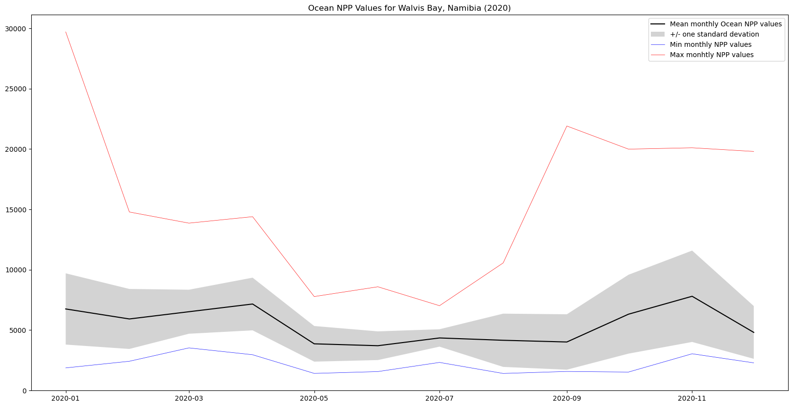
Here, we observe the seasonal variability in Ocean NPP for the Walvis Bay area. The larger peaks in the max values suggests the intensity of these events may vary spatially. Let’s explore one of the time steps (e.g., October) where there are higher maximum monthly NPP values to see if this is the case.
Important note: Keep in mind that the size and extent of your AOI will influence the ‘signal’ of your time series. If the phenomena you are investigating displays greater spatial variability a larger AOI will provide more ‘noise’ making it more difficult to detect.
Visualizing the Raster Imagery
Let’s first explore a single tile during one of the relative peaks in October, where we observe an increased sustained peak in NPP values.
print(items[2]["properties"]["start_datetime"])2020-10-01T00:00:00+00:00# Declare the range of values for this collection
rescale_values = {"max": 34561.35546875, "min": 14.516647338867188}october_tile = requests.get(
f"{RASTER_API_URL}/stac/tilejson.json?collection={items[2]['collection']}&item={items[2]['id']}"
"&assets=cog_default"
"&color_formula=gamma+r+1.05&colormap_name=viridis"
f"&rescale={rescale_values['min']},{rescale_values['max']}",
).json()
october_tile{'tilejson': '2.2.0',
'version': '1.0.0',
'scheme': 'xyz',
'tiles': ['https://openveda.cloud/api/raster/stac/tiles/WebMercatorQuad/{z}/{x}/{y}@1x?collection=MO_NPP_npp_vgpm&item=A_202010.L3m_MO_NPP_npp_vgpm_4km&assets=cog_default&color_formula=gamma+r+1.05&colormap_name=viridis&rescale=14.516647338867188%2C34561.35546875'],
'minzoom': 0,
'maxzoom': 24,
'bounds': [-180.0000050868518,
-90.00000508655744,
180.0000050868518,
89.9999974571629],
'center': [0.0, -3.814697265625e-06, 0]}# Use bbox initial zoom and map
# Set up a map located w/in event bounds
import folium
m = Map(
tiles="OpenStreetMap",
location=[
-22.421460,
14.268801,
],
zoom_start=8,
)
map_layer = TileLayer(
tiles=october_tile["tiles"][0],
attr="VEDA",
)
map_layer.add_to(m)
mMake this Notebook Trusted to load map: File -> Trust Notebook
From the image above, we see higher Ocean NPP values (displayed in teal) located in and around Walvis Bay and the surrounding shorelines - highlighting areas of concern for the local shellfish industry.
Visualizing the raster time series
Now we will look at each of the raster tiles that make up this time series to explore the spatial and temporal patterns of Ocean NPP observed in Walvis Bay throughout 2020.
We used the code below to examine the tiles and the order in which they are presented.
import matplotlib.pyplot as plt
for item in items:
tiles = requests.get(
f"{RASTER_API_URL}/stac/tilejson.json?collection={item['collection']}&item={item['id']}"
"&assets=cog_default"
"&color_formula=gamma+r+1.05&colormap_name=viridis"
f"&rescale={rescale_values['min']},{rescale_values['max']}",
).json()
print(tiles["tiles"])['https://openveda.cloud/api/raster/stac/tiles/WebMercatorQuad/{z}/{x}/{y}@1x?collection=MO_NPP_npp_vgpm&item=A_202012.L3m_MO_NPP_npp_vgpm_4km&assets=cog_default&color_formula=gamma+r+1.05&colormap_name=viridis&rescale=14.516647338867188%2C34561.35546875']
['https://openveda.cloud/api/raster/stac/tiles/WebMercatorQuad/{z}/{x}/{y}@1x?collection=MO_NPP_npp_vgpm&item=A_202011.L3m_MO_NPP_npp_vgpm_4km&assets=cog_default&color_formula=gamma+r+1.05&colormap_name=viridis&rescale=14.516647338867188%2C34561.35546875']
['https://openveda.cloud/api/raster/stac/tiles/WebMercatorQuad/{z}/{x}/{y}@1x?collection=MO_NPP_npp_vgpm&item=A_202010.L3m_MO_NPP_npp_vgpm_4km&assets=cog_default&color_formula=gamma+r+1.05&colormap_name=viridis&rescale=14.516647338867188%2C34561.35546875']
['https://openveda.cloud/api/raster/stac/tiles/WebMercatorQuad/{z}/{x}/{y}@1x?collection=MO_NPP_npp_vgpm&item=A_202009.L3m_MO_NPP_npp_vgpm_4km&assets=cog_default&color_formula=gamma+r+1.05&colormap_name=viridis&rescale=14.516647338867188%2C34561.35546875']
['https://openveda.cloud/api/raster/stac/tiles/WebMercatorQuad/{z}/{x}/{y}@1x?collection=MO_NPP_npp_vgpm&item=A_202008.L3m_MO_NPP_npp_vgpm_4km&assets=cog_default&color_formula=gamma+r+1.05&colormap_name=viridis&rescale=14.516647338867188%2C34561.35546875']
['https://openveda.cloud/api/raster/stac/tiles/WebMercatorQuad/{z}/{x}/{y}@1x?collection=MO_NPP_npp_vgpm&item=A_202007.L3m_MO_NPP_npp_vgpm_4km&assets=cog_default&color_formula=gamma+r+1.05&colormap_name=viridis&rescale=14.516647338867188%2C34561.35546875']
['https://openveda.cloud/api/raster/stac/tiles/WebMercatorQuad/{z}/{x}/{y}@1x?collection=MO_NPP_npp_vgpm&item=A_202006.L3m_MO_NPP_npp_vgpm_4km&assets=cog_default&color_formula=gamma+r+1.05&colormap_name=viridis&rescale=14.516647338867188%2C34561.35546875']
['https://openveda.cloud/api/raster/stac/tiles/WebMercatorQuad/{z}/{x}/{y}@1x?collection=MO_NPP_npp_vgpm&item=A_202005.L3m_MO_NPP_npp_vgpm_4km&assets=cog_default&color_formula=gamma+r+1.05&colormap_name=viridis&rescale=14.516647338867188%2C34561.35546875']
['https://openveda.cloud/api/raster/stac/tiles/WebMercatorQuad/{z}/{x}/{y}@1x?collection=MO_NPP_npp_vgpm&item=A_202004.L3m_MO_NPP_npp_vgpm_4km&assets=cog_default&color_formula=gamma+r+1.05&colormap_name=viridis&rescale=14.516647338867188%2C34561.35546875']
['https://openveda.cloud/api/raster/stac/tiles/WebMercatorQuad/{z}/{x}/{y}@1x?collection=MO_NPP_npp_vgpm&item=A_202003.L3m_MO_NPP_npp_vgpm_4km&assets=cog_default&color_formula=gamma+r+1.05&colormap_name=viridis&rescale=14.516647338867188%2C34561.35546875']
['https://openveda.cloud/api/raster/stac/tiles/WebMercatorQuad/{z}/{x}/{y}@1x?collection=MO_NPP_npp_vgpm&item=A_202002.L3m_MO_NPP_npp_vgpm_4km&assets=cog_default&color_formula=gamma+r+1.05&colormap_name=viridis&rescale=14.516647338867188%2C34561.35546875']
['https://openveda.cloud/api/raster/stac/tiles/WebMercatorQuad/{z}/{x}/{y}@1x?collection=MO_NPP_npp_vgpm&item=A_202001.L3m_MO_NPP_npp_vgpm_4km&assets=cog_default&color_formula=gamma+r+1.05&colormap_name=viridis&rescale=14.516647338867188%2C34561.35546875']Since we found the tiles to be presented in reverse time order, we’ll revise this in the code below. We’ll use reversed() to do so.
import tempfile
from datetime import datetime
import dateutil.parser as parser
from IPython.display import display, Image
for item in reversed(items):
response = requests.post(
f"{RASTER_API_URL}/cog/feature",
params={
"format": "png",
"height": 512,
"width": 512,
"url": item["assets"]["cog_default"]["href"],
"rescale": f"{rescale_values['min']},{rescale_values['max']}",
"colormap_name": "viridis",
},
json=walvis_bay_aoi,
)
assert response.ok, response.text
image_bytes = response.content
# formating the datetime to make for easier reading
datetime_str = item["properties"]["start_datetime"]
datetime_object = parser.parse(datetime_str)
print(datetime_object.strftime("%B %Y"))
display(Image(image_bytes, height=512, width=512))January 2020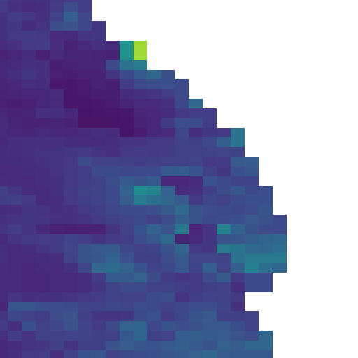
February 2020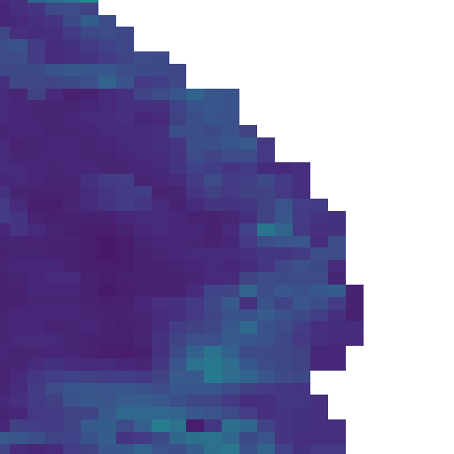
March 2020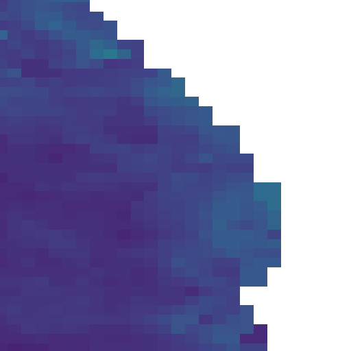
April 2020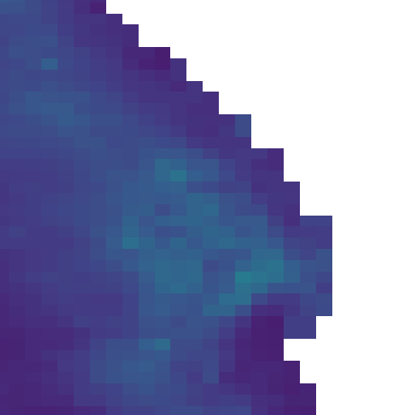
May 2020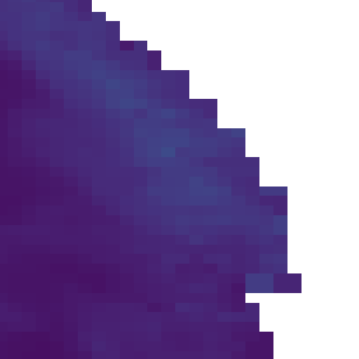
June 2020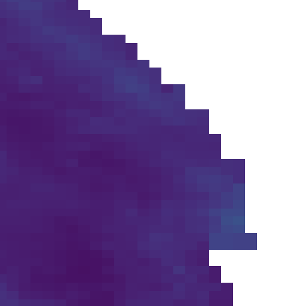
July 2020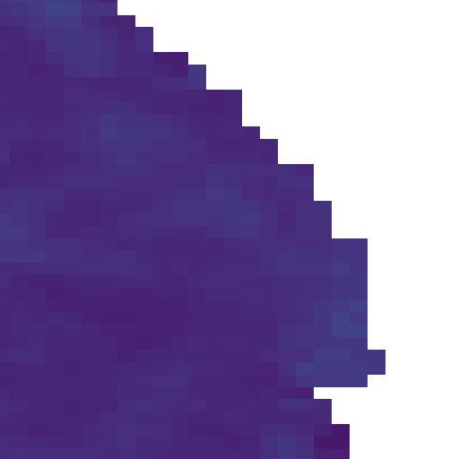
August 2020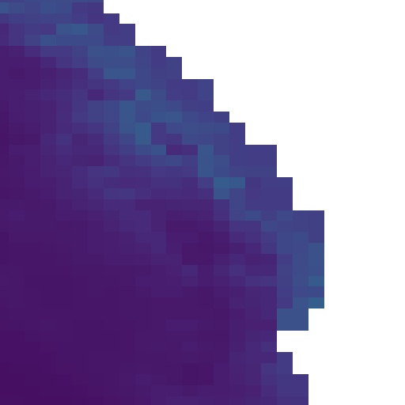
September 2020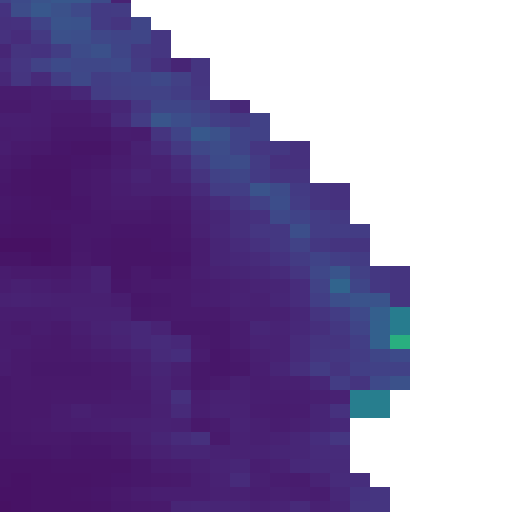
October 2020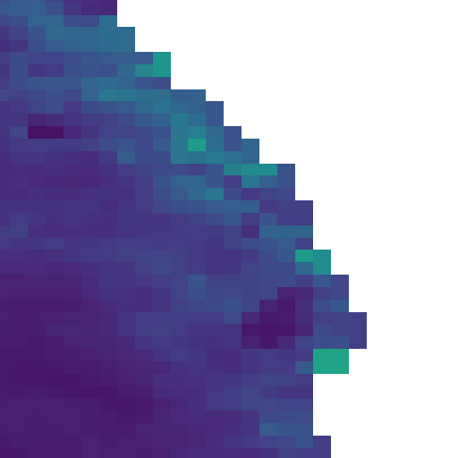
November 2020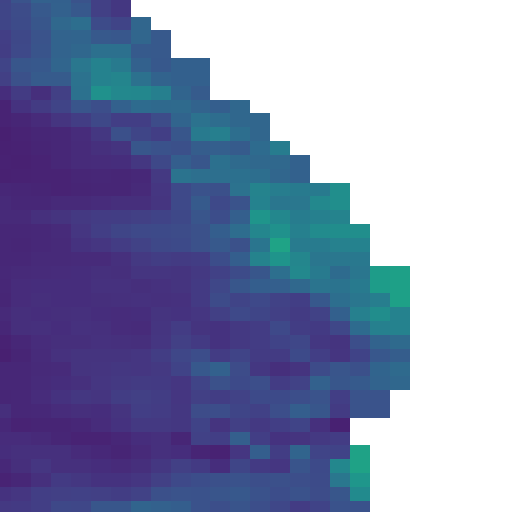
December 2020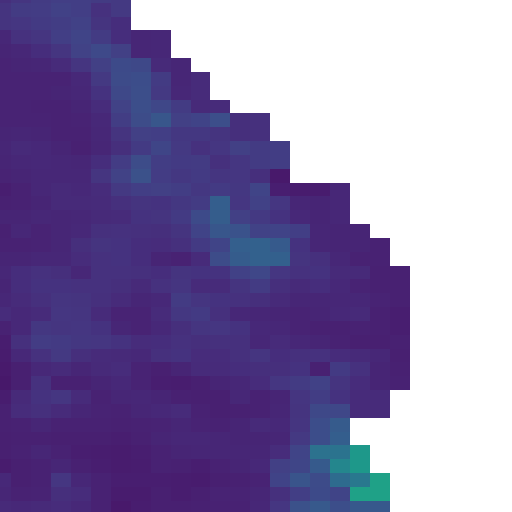
Summary
In this case study we have successfully visualized the spatial and temporal variability of Ocean NPP values in the Benguela Current, which displays a seasonal pattern of peaking in the October, November, December, and January months when favorable temperatures and nutrient conditions are present.